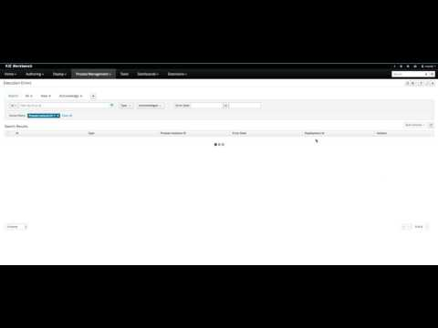

Execution error – how to deal with unexpected in jBPM 7.1
That in some cases might not be enough and thus additional error handling is required to provide:
- Better traceability
- Visibility in case of critical processes
- Reporting and analytics – based on error situations
- External system error handling and compensation
Overview
Configurable error handling is introduced in version 7.1 that will be responsible for catching any technical errors thrown throughout the process engine execution (including task service). Any technical exception means:
- Anything that extends java.lang.Throwable
- Was not handled before – like process level error handling
There are several components that made up the error handling mechanism and allow pluggable approach to extend its capabilities.
The entry point from process engine point of view is ExecutionErrorManager that is integrated with RuntimeManager which is then responsible for providing it to underlying components – KieSession and TaskService. ExecutionErrorManager from the api point of view gives access to:
- ExecutionErrorHandler – the heart of the error handling mechanism
- ExecutionErrorStorage – pluggable storage for execution error information
ExecutionErrorHandler is bound to the life cycle of RuntimeEngine, meaning is created when new runtime engine is created and is destroyed when RuntimeEngine is disposed. Single instance of the ExecutionErrorHandler is used within given execution context (transaction). Both KieSession and TaskService uses that instance to inform the error handling about processed nodes/tasks. ExecutionErrorHandler allows to inform it about:
- Starting processing of a given node instance
- Completion of processing of a given node instance
- Starting processing of a given task instance
- Completion of processing of a given task instance
Such information is mainly used for errors that are of unknown type – in other words errors that do not provide information about the process context. For example, data base exception upon commit time will not carry any process information meaning that would make the error information really poor and pretty much useless.
Error types and filters
Since error handling will attempt to catch and handle any kind of error it needs a way to categorize errors to be able to properly extract information out of the error and make it pluggable as users might use their special types of error to be thrown and handled in different way then one provided out of the box.
Error categorization and filtering is based on so called ExecutionErrorFilters. This is simple interface that is solely responsible for building instance of ExecutionError that is later on stored via the ExecutionErrorStorage. It has following methods:
- accept to indicate if given error can be handled by the filter
- filter where the actual filtering/handling etc happens
- getPriority indicates the priority which is used when calling filters
Filters provide their priority as only one filter can process given error – this is mainly to avoid to have multiple filters returning alternative “views” of the same error. That’s why priority was introduced to allow more specialized filters to see if they can accept the error and if so deal with it, otherwise let it to be handled by another filter.
ExecutionErrorFilter can be provided using ServiceLoader mechanism that is quite easy and proven so extending capability of the error handling is very simple.
Out of the box ExecutionErrorFilters:
Class name | Type | Priority |
org.jbpm.runtime.manager.impl.error.filters.ProcessExecutionErrorFilter | Process | 100 |
org.jbpm.runtime.manager.impl.error.filters.TaskExecutionErrorFilter | Task | 80 |
org.jbpm.runtime.manager.impl.error.filters.DBExecutionErrorFilter | DB | 200 |
org.jbpm.executor.impl.error.JobExecutionErrorFilter | Job | 100 |
The lower value of the priority the higher execution order it gets. In above table then filters will be invoked in following order:
- Task
- Process
- Job
- DB
Error acknowledgment
By definition every error that is caught and stored is unacknowledged, that means it is to be handled by someone/something (in case of automatic error recovery). That is the base approach to allow to filter on existing errors if they have been already taken care of or not. Acknowledgment on each error saves user who did the acknowledgment and the time stamp for traceability purpose.
Since the ExecutionErrorFilter is responsible for creating the ExecutionError instance, different implementations might decide that the acknowledgement is set to true immediately when the error is handled – maybe because there is a notification sent to some issue tracking system or an email to administrator. Again, that is up to concrete implementation of the filters or even storage.
Auto acknowledgement of execution errors
By default, executions errors are created unacknowledged and thus require manual action to be performed otherwise they will always be seen as information that requires attention. In case of bigger volumes, manual actions can be time consuming and not suitable in some situations. To help with that auto acknowledgement of errors has been provided. It is based on scheduled jobs (via jbpm executor) and there are three types of jobs available:
- org.jbpm.executor.commands.error.JobAutoAckErrorCommand
- Job responsible for finding out jobs that previously failed but now are either cancelled, completed or rescheduled for another execution. This job will only acknowledge execution errors of type “Job”
- org.jbpm.executor.commands.error.TaskAutoAckErrorCommand
- Job responsible for auto acknowledgment of user task execution errors for task that previously failed but now are in one of the exit states (completed, failed, exited, obsolete). This job will only acknowledge execution errors of type “Task”
- org.jbpm.executor.commands.error.ProcessAutoAckErrorCommand
- Job responsible for auto acknowledgment of process instances that have errors attached. It will acknowledge errors in case process instance is already finished (completed or aborted) or the task that the error originated from is already finished – based on init_activity_id value. This job will acknowledge any type of job that matches above criteria.
All three jobs can be registered on KIE Server to automatically auto acknowledge errors and they are reoccuring type of jobs, meaning if not explicitly said to be SingleRun they will run once a day by default. They can be configured to run on any time intervals by providing NextRun as time expression e.g. 2h, 5d etc
Last parameter that these jobs support is EmfName to provide custom name of entity manager factory that should be used when searching for jobs to acknowledge. All of these parameters are optional.
There is a base class that is extended by individual jobs and can be seen as the starting point for additional implementation of auto acknowledge options
Once extended there are two methods to be implemented:
- protected abstract List<ExecutionErrorInfo> findErrorsToAck(EntityManager em);
- protected abstract String getAckRule();
First is the most important as it abstracts the way individual jobs find error to be acknowledged. Second is to provide the rule based on which the errors were found. It is only for logging purpose to indicate what led to auto acknowledge.
Services and access to error information
Access to error information (for the out of the box storage) is through jbpm services. The two admin facing services provide basic access to the error information and to be able to acknowledge the errors:
- ProcessInstanceAdminService
- allow to find execution errors of any type and mainly focusing on search capability around process instance
- UserTaskAdminService
- allow to find Task type of errors and focuses on search es around task details like name or id
Since the way of looking for errors can be pretty much unlimited, above services provide the basic access only. For more advanced/tailored searches advanced queries should be used. There is out of the box query mapper available to directly produce the ExecutionError instance out of the data set.
Similar access and capabilities are exposed over KIE Server Remote api and its client library.
Clean up mechanism
To be able to maintain the ExecutionErrorInfo table in good health there is a need to clean it up from time to time. Since the errors can be there for quite some time, depending on the life cycle of the processes, there is no direct api to clean it up. Instead there is jBPM executor command that can be scheduled for recurring execution to periodically clean up errors. There are several options to be used for clean up command:
- DateFormat
- date format for further date related params – if not given yyyy-MM-dd is used (pattern of SimpleDateFormat class)
- EmfName
- name of entity manager factory to be used for queries (valid persistence unit name)
- SingleRun
- indicates if execution should be single run only (true|false)
- NextRun
- provides next execution time (valid time expression e.g. 1d, 5h, etc)
- OlderThan
- indicates what errors should be deleted – older than given date
- OlderThanPeriod
- indicated what errors should be deleted older than given time expression (valid time expression e.g. 1d, 5h, etc)
- ForProcess
- indicates errors to be deleted only for given process definition
- ForProcessInstance
- indicates errors to be deleted only for given process instance
- ForDeployment
- indicates errors to be deleted that are from given deployment id
Important note is that the command will always (regardless of parameters given) restrict deletion to already completed/aborted process instances. If there is any other need to deal with that it should be extended or provided as custom command.
Time to see this in action
